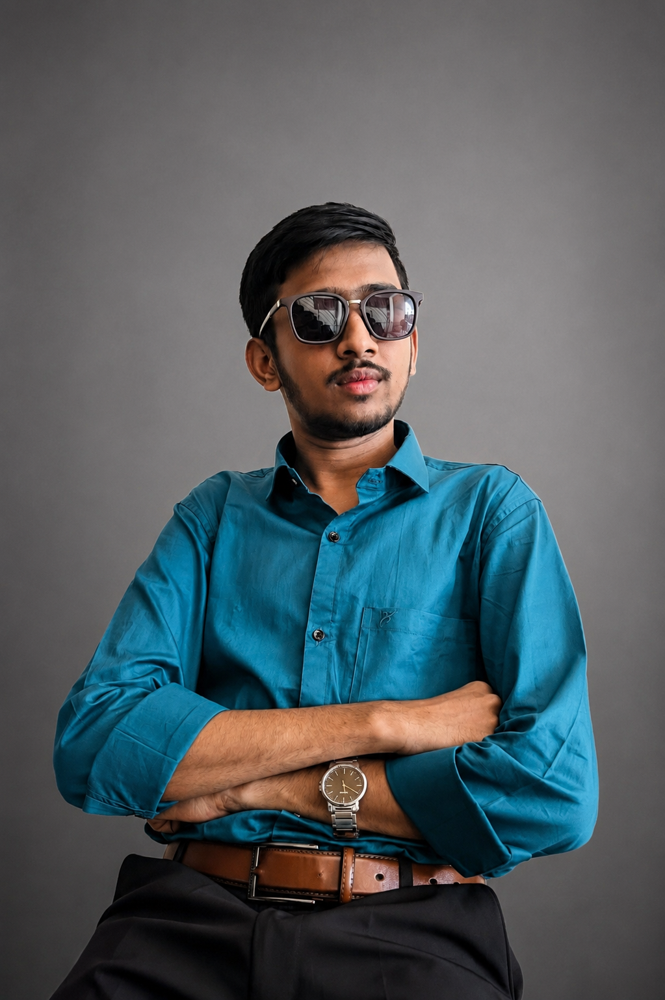
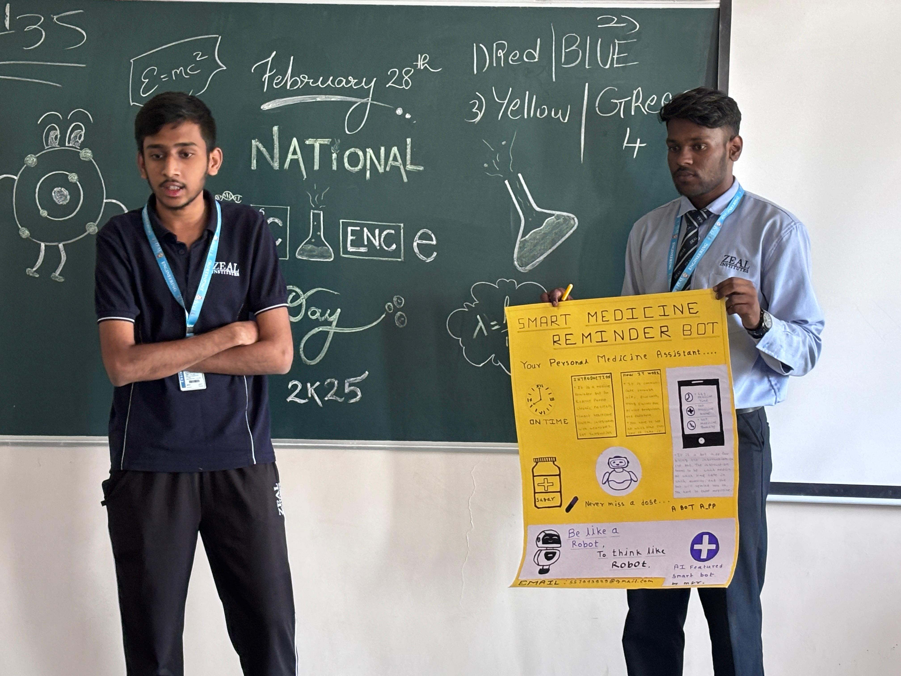
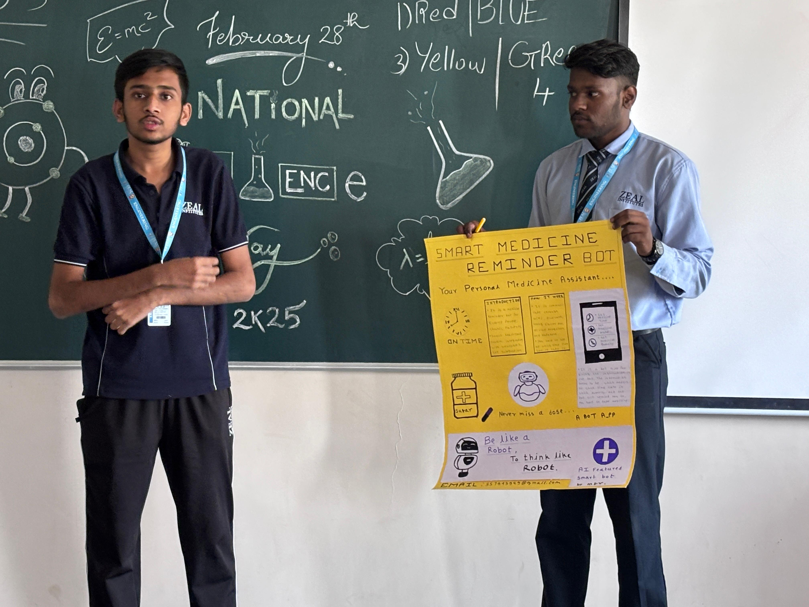
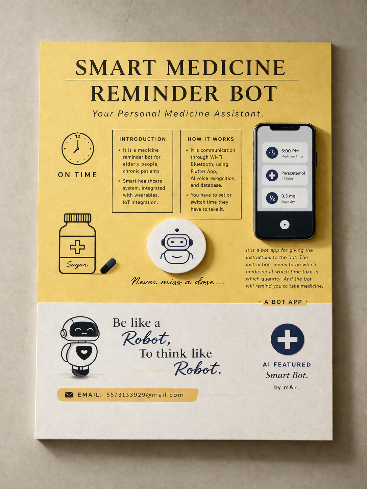
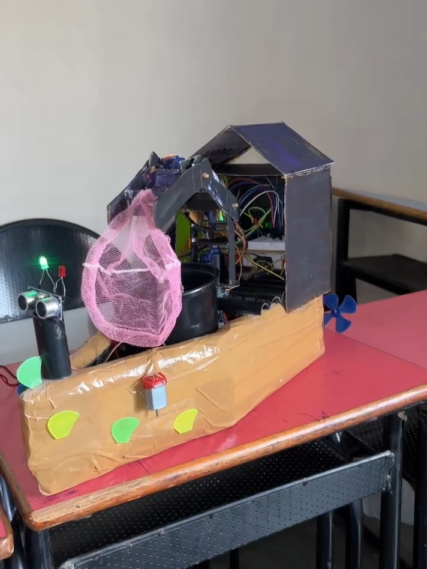
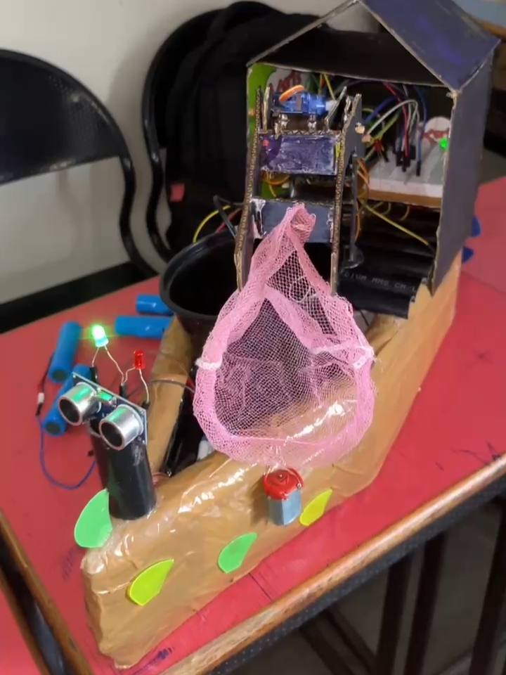
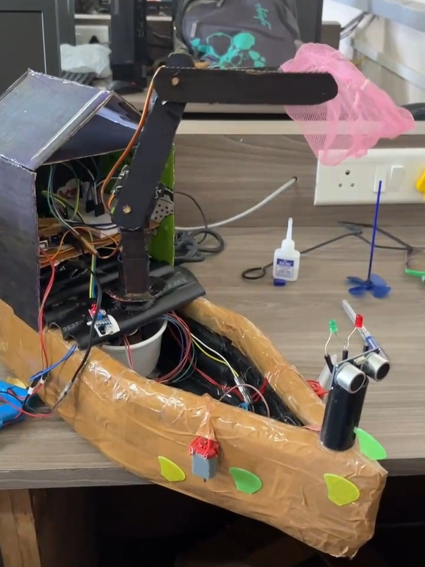
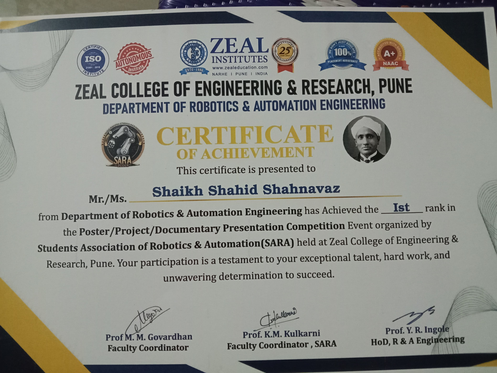
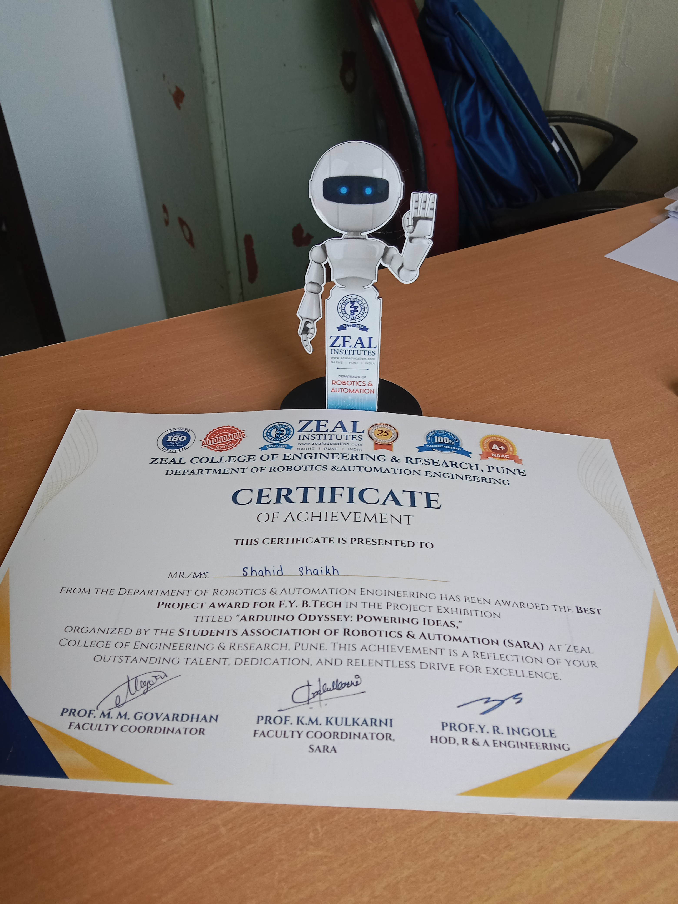

Robotics & Automation Engineer
I am deeply driven by a passion for robotics and next-generation technological innovation,
with a strong emphasis on research-oriented development and real-world impact. My approach
is rooted in continuous learning, where I actively explore emerging research, evolving methodologies,
and breakthrough technologies that are shaping the future of intelligent systems.
With a focused interest in the convergence of advanced domains such as the Internet
of Robotic Things (IoRT), Industrial Internet of Things (IIoT), and the integration
of Artificial Intelligence with Robotics, I aim to contribute to the development of
smart, autonomous, and highly efficient systems.
I believe the future lies in interconnected, intelligent machines that can seamlessly
interact with their environment, optimize industrial processes, and enhance human capabilities.
My work and research are aligned with this vision building solutions that are not only innovative
but also scalable and impactful in real-world applications.
As an aspiring robotics innovator, I am committed to pushing the boundaries of
what intelligent systems can achieve, while continuously evolving with the rapidly advancing
technological landscape.
A multidisciplinary skill set focused on building intelligent robotic and automation systems, combining software, hardware, and simulation technologies.
A showcase of real-world engineering solutions built through hands-on experience in robotics, automation, and intelligent systems.



AI Integrated Bot With Full Heathcare Live Monitoring.



A Boat with Advanced Cleaning AI Based System.
Recognized for innovation, technical excellence, and impactful contributions in robotics and engineering.

Zeal College of Engineering & Research, Pune
Secured 1st position in a competitive technical event for presenting an innovative robotics project and research-based poster.
Recognized for innovation, technical clarity, and impactful project execution.

SARA | Zeal College of Engineering & Research
Awarded Best Project for developing a creative and technically sound Arduino-based system during the exhibition.
Honored for outstanding creativity, technical execution, and real-world application.
My vision is to design and develop intelligent robotic systems that can solve real-world problems and transform the future of automation.
I aspire to build a robotics-driven future where machines are not just tools, but intelligent systems capable of assisting, protecting, and enhancing human life.
My long-term goal is to develop advanced robotic solutions such as humanoid robots, autonomous systems, and smart automation technologies across industries like healthcare, defense, and industrial automation.
I am working towards establishing a robotics and automation system focused on creating innovative, real-world solutions that bridge the gap between research and industry.
Currently, I am focused on strengthening my skills in robotics, ROS2, AI integration, and system design while building practical projects.
Driven by innovation, guided by purpose, and committed to building the future of intelligent systems.